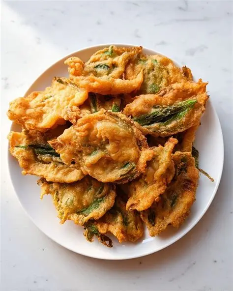

Cook With MePalak Pakoda
⭐⭐⭐⭐⭐ 4.3 Rating | ⏱ 15 Minutes | 🍽 3 Servings
Category
Main Course
Difficulty
Easy
Calories
240 kcal
Cooking Style
Culinary Method
📋 Ingredients
- Medium or Thick Poha: 2 cups
- Oil: 2 tbsp
- Peanuts: 2 tbsp (raw)
- Tempering: 1 tsp mustard seeds, 1/2 tsp cumin seeds, 8–10 curry leaves, 2 chopped green chilies, pinch of asafoetida (hing)
- Veggies: 1 large onion (finely chopped), 1 small potato (diced small, optional)
- Seasoning: 1/2 tsp turmeric powder, 1/2 tsp sugar, salt to taste
- Garnish: Fresh coriander, 1 tbsp lemon juice, 2 tbsp grated coconut or sev
🍳 Required Utensils
- Deep frying pan (Kadai)
- Slotted spoon (jhara) for draining oil
- Mixing bowl
- Paper towels for absorbing excess oil
📖 Introduction
Palak Pakoda (Spinach Fritters) is a popular Indian tea-time snack made by deep-frying fresh spinach leaves coated in a spiced gram flour (besan) batter. They are prized for their golden, crunchy exterior and tender leafy interior.
🔬 Principle
The key mechanism lies in quick, high-heat deep frying. The gram flour batter forms a moisture barrier around the spinach leaf. As it cooks, the water inside the spinach turns to steam, tenderizing the leaf while the outer batter dehydrates instantly to become light and crispy.
👨🍳 Procedure
- Wash spinach leaves thoroughly and dry them completely with a towel.
- In a bowl, combine gram flour, rice flour, spices, and salt.
- Add water gradually to whisk into a smooth, semi-thick batter.
- Heat oil in a deep pan over medium-high heat.
- Dip each spinach leaf individually into the batter to coat evenly.
- Gently lower the coated leaves into the hot oil in batches
- Fry for 2–3 minutes, flipping occasionally until golden brown.
- Remove with a slotted spoon and place on paper towels.
- Sprinkle with chaat masala and serve hot with chutney.
⚠ Precautions
- Control Oil Temp: Frying at low temperatures causes the pakodas to absorb excess oil and become soggy. Keep oil medium-hot.
- Oxalates in Spinach: High in oxalates; those with kidney stone concerns should limit consumption.
- Calorie Density: Deep frying increases total calories and fats—consume in moderation.
💡 Chef Tips
- Rice Flour for Extra Crunch: Adding 1-2 tablespoons of rice flour or fine semolina prevents the pakodas from turning soft quickly.
- Hot Oil Trick: Pour 1 tablespoon of hot oil directly into the batter before dipping the spinach; this creates tiny air pockets that make the coating light and airy.
- Crush Ajwain: Rub carom seeds (ajwain) between your palms before adding to unlock their full aroma and aid digestion.
🥗 Nutrition Facts
| Nutrient | Amount |
|---|---|
| Calories | 210-240 kcal |
| Protein | 6 g |
| Carbohydrates | 22 g |
| Fat | 12 g |
| Dietary Fiber | 4 g |
🍽 Serving Suggestions
- Serve hot with fresh green mint-coriander chutney and tamarind chutney.
- Pair with a hot cup of Indian Masala Chai on a rainy evening.
🌿 Health Benefits
- Nutrient-Dense Greens: Spinach delivers high levels of plant-based iron, antioxidants, and lutein for eye health.
- Gluten-Free Base: Made naturally gluten-free using gram flour (besan), providing plant protein and complex carbs.
✅ Result
Golden-brown, extra-crispy fritters with a savory, earthy spinach center balanced by savory, warming Indian spices.
🎥 Watch Recipe Video
Learn the complete recipe by watching the step-by-step video.
▶ Watch on YouTube